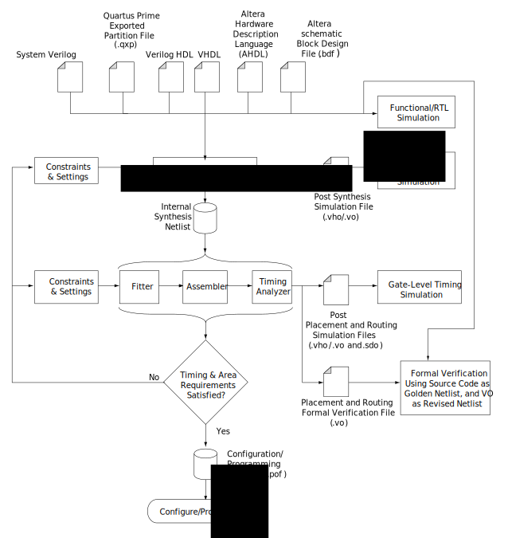

Páginas Internas de Referência do Programa Quartus:
Criar Projeto no Quartus Prime Lite:
Menu File:
New Project Wizard.
Se aparecer a tela informativa:
Next.
Definir:
O diretório do projeto;
O nome do projeto;
Qual é o “Top-Level Design” (o main da linguagem C).
Project Type:
Empty Project.
Add Files:
Next.
Family, Device & Board Settings:
Cyclone V:
5CEBA4F23C7 (a FPGA da placa DE0-CV).
EDA Tool Settings:
Next.
Summary:
Finish.
DE0-CV
Criar um novo arquivo:
Menu File > Design Files > VHDL File;
Com esse novo arquivo selecionado:
Menu File > Save As;
Nomeie o arquivo e salve.
Adicionar um arquivo ao projeto:
Com esse arquivo selecionado:
Menu Project > Add Current File to Project.
Configurar a Top Level Entity:
Selecione o arquivo que possui a entidade desejada e:
Vá ao Menu Project > Set as Top Level Entity.
Ou, vá em:
Menu Assignments > Settings > General > Top-Level Entity;
E escolha a Top-Level Entity desejada.
Acessar a biblioteca de modelos (Templates):
Clique com o botão esquerdo do mouse no editor de texto e escolha:
Insert Template.
Ou, vá em Menu Edit:
Insert Template.
Localização dos templates de interesse para o curso:
Em Insert Template > VHDL > Constructs > Design Units, veja a sintaxe para:
Library Clause;
Use Clause;
Entity;
Architecture.
Em Insert Template > VHDL > Constructs > Declarations, veja a sintaxe para:
Signal Declaration;
Variable Declaration;
Constant Declaration;
Component Declaration.
Em Insert Template > VHDL > Constructs > Concurrent Statements, veja a sintaxe para:
Combinational Process;
Sequencial Process.
Em Insert Template > VHDL > Constructs > Concurrent Statements > Instances, veja a sintaxe para:
Component Instantiation;
Direct Entity Instantiation;
Direct Entity Instantiation w/ Architecture.
Em Insert Template > VHDL > Constructs > Sequential Statements, veja a sintaxe para:
If Statement.
Em Insert Template > VHDL > Constructs > Expressions, veja a sintaxe para:
Unary Operators;
Binary Operators.
Em Insert Template > VHDL > Logic > Registers, veja a sintaxe para:
Basic Positive Edge Register;
Basic Positive Edge Register with Asynchronous Reset and Clock Enable;
Full-Featured Positive Edge Register with All Secondary Signals.
Inserir o template escolhido:
Com o cursor na posição do arquivo onde deseja inserir o template:
Escolha o template desejado e no canto direito inferior da tela de templates, pressione o Insert.
Ou, escolha o template desejado e copie a parte de interesse e cole no arquivo.
Criar o diagrama lógico do circuito:
Menu File:
New:
Block Diagram/Schematic File.
Na tela de edição que foi aberta:
Use o simbolo da porta AND para abrir a biblioteca.
No navegador da biblioteca:
Primitives:
Logic:
and2;
OK.
Editar as entradas e saídas do circuito:
Na tela de edição:
Use o simbolo “In”:
Selecione como entrada:
Insira os pinos de entrada;
Selecione como saída:
Insira os pinos de saída.
Modifique os nomes dos sinais de entrada e de saída:
Com duplo clique nos nomes atuais:
Mude para Entrada_1;
Mude para Entrada_2;
Mude para Saida;
Não esqueça de salvar o seu projeto.
Geração de código VHDL:
No caso da utilização de descrição do circuito através do diagrama lógico, pode-se verificar, ou mesmo exportar, o código equivalente ao diagrama. Para isso, use a opção Create HDL Design File from Curret File:
Menu File:
Create / Update:
Create HDL Design File from Curret File…
Selecione VHDL;
OK.
Vá no diretório do projeto e abra o arquivo “.VHD” no editor de texto.
Para uma porta AND, o programa será similar ao seguinte:
O processo de compilação é dividido em algumas etapas:
Análise:
Verifica cada unidade de projeto separadamente:
declaração da entidade, arquitetura, etc..
facilita se utilizar um arquivo por unidade de projeto.
Verifica se há erros de sintaxe (gramática) ou semântica (significado);
As unidades analisadas são colocadas em uma biblioteca:
usando um formato interno a dependente da implementação;
essa biblioteca é chamada de work.
Elaboração:
Transforma o projeto hierárquico em um projeto plano:
cria as portas (ports);
cria os sinais (signal) e processos (process) dentro do corpo de cada arquitetura;
para cada componente instanciado, copia a entidade e corpo de arquitetura do componente para o módulo que o utiliza;
repete esse procedimento recursivamente nos corpos de arquitetura.
Resultado da elaboração:
conjunto de processos (process) interligados por uma rede de sinais (signal), chamado de netlist.
É o suficiente para que a simulação possa ser executada.
Síntese:
Com o auxílio da biblioteca da tecnologia usada, traduz o projeto RTL em uma lista de conexões de portas lógicas (gate-level netlist):
Existem restrições ao uso de algumas declarações no modelo RTL;
Essas restrições dependem da ferramenta de síntese utilizada.
Alocação e Roteamento:
Analisa a lista de conexões gerada na síntese e aloca os blocos funcionais (primitivas) no dispositivo alvo (modelo da FPGA ou ASIC);
Faz o roteamento dos sinais que interconectam esses blocos funcionais;
Verifica se foram satisfeitas as restrições (constraints) de área, temporização e potência.
Gera um arquivo contendo todas as conexões necessárias para que a FPGA implemente a funcionalidade desejada.
No Quartus, a compilação pode ser feita de três formas:
Start Compilation: Faz a compilação completa. Isso inclui: análise sintática, criação da netlist, roteamento para a tecnologia escolhida (fitter), verificação das restrições de temporização do projeto, alocação dos pinos da FPGA, geração do arquivo assembly para gravar a FPGA, etc …
Start Analysis & Elaboration: Analisa o projeto procurando por erros de sintaxe e semântica. Também executa a elaboração, que é a identificação da hierarquia criada. Após a execução, é possível utilizar o RTL Viewer e navegar pelos arquivos no Project Navigator.
Start Analysis & Synthesis: Analisa o projeto procurando por erros de sintaxe e semântica. Faz a extração da netlist e cria um banco de dados com todos arquivos do projeto. Também faz o mapeamento do projeto para a arquitetura alvo (síntese). Após a execução, é possível fazer a simulação do circuito criado.
Clique no ícone escolhido:
Aguarde a finalização do processo;
Verifique se ocorreu algum erro.
Tela de Compilação
Para verificar o circuito resultante da compilação, use:
Tools > Net List Viewers > RTL Viewer
Menu
Fluxo da compilação (compilation flow) do Quartus Prime
Fluxo do Projeto
Para verificar o circuito resultante da compilação, use:
Tools > Net List Viewers > RTL Viewer
Menu
Que exibirá o circuito:
Tela do RTL Viewer
Para navegar dentro do circuito RTL, utilize o sinal “+” no canto superior esquerdo do componente.
Tela do RTL Viewer
É possível continuar abrindo os blocos construtivos, com o sinal “+”, ou retornar para os blocos superiores, utilizando o sinal “-”.
Tela do RTL ViewerTela do RTL Viewer
Pode-se verificar as conexões do circuito:
Selecionando a conexão desejada, no ponto em que ela se une ao bloco construtivo.
Tela do RTL Viewer
E, com o botão direito do mouse, exibir o sub menu:
E escolher: Conectivity Details.
Tela do RTL Viewer
Será exibido um detalhe da conexão contendo as ligações.
Tela do RTL Viewer
Que podem, eventualmente, possuir o sinal de “+”:
Permitindo expandir a visualização para ver os detalhes dessa conexão.
Tela do RTL ViewerTela do RTL Viewer
Para simular o circuito, crie uma nova simulação:
Menu File:
New:
Verification/Debug Files:
University Program VWF;
OK.
Abrirá uma nova tela com o simulador:
Simulation Waveform Editor.
A tela ‘Simulation Waveform Editor’:
Selecione os sinais do circuito que deseja ver na simulação:
Menu Edit:
Insert:
‘Insert Node or Bus’.
Na tela de ‘Insert Node or Bus’:
Clique em ‘Node Finder’.
Na tela de ‘Node Finder’:
Clique em List:
Escolha os sinais para simular;
OK.
OK.
Crie os estímulos (sinais) de entrada para a simulação:
Selecione a primeira entrada no seu ícone ‘In’:
Selecione o ícone de ‘Count Value’:
Em ‘Transitions occour’, digite 10 e escolha a unidade de “ns” (nanosegundos).
OK.
Faça o mesmo para a segunda entrada e escolha 20 ns.
Note que foi criada a sequência binária da tabela da verdade.
Salve a sua simulação.
Ajuste a janela de tempo para simulação:
Caso queira diminuir a janela de tempo mostrada:
Edit:
Set End Time…
Digite 40 (ns).
Execute a simulação funcional:
Clique no ícone:
Run Functional Simulation.
Caso não haja erros, deverá aparecer uma nova tela com a simulação.
Verifique se o resultado é coerente com a tabela da verdade dessa porta.
Gravar projeto na FPGA usando o Quartus Prime Lite:
Após finalizar, com sucesso, a compilação completa, abra o gravador:
Deverá aparecer a tela do gravador, indicando que ele existe e está conectado:
Para escolher o arquivo a ser enviado para a FPGA, clique em Add File e escolha o diretório output_files:
Escolha o arquivo com a extensão “.sof” que deseja gravar:
Quando o arquivo carregar, confira a FPGA escolhida e se ela aparece como disponível para gravação:
Aperte o botão de Start e espere o término da gravação:
Caso o gravador não seja encontrado, aparecerá a seguinte tela:
Verifique a conexão do cabo USB com a placa e confira a exisência do gravador no Hardware Setup.
Principais tipos de arquivos pertencentes a um projeto do Quartus:
Definições do projeto:
*.qpf - Quartus Project
*.qsf - Quartus Settings File
Código:
*.vhd - VHDL Design File
*.v - Verilog HDL Source
*.bsf - Quartus Block Symbol File
*.bdf - Quartus Block Diagram File
*.qip - Quartus IP File
Memória:
*.sof - SRAM Object File
*.mif - Memory Initialization File
Simulação:
*.vwf - Quartus Vector Waveform File
Outras:
*.pof - Programmer Object File
Todos os tipos de arquivos suportados pelo Quartus:
Tipo de Arquivo
Extensão
AHDL Include File
.inc
ATOM Netlist File
.atm
Block Design File
.bdf
Block Symbol File
.bsf
BSDL file
.bsd
Chain Description File
.cdf
Comma-Separated Value File
.csv
Component Declaration File
.cmp
Component Description File
_hw.tcl
Compressed Vector Waveform File
.cvwf
Conversion Setup File
.cof
Cross-Reference File
.xrf
database files
.cdb, .hdb, .rdb, .tdb
Design Protocol File
.dpf
Graphic Design File
.gdf
Hexadecimal (Intel Format) File
.hex
Hexadecimal (Intel Format) Output File
.hexout
HSPICE Simulation Deck File
.sp
HTML Format Report File
.htm
I/O Pin State File
.ips
IBIS Output File
.ibs
In System Configuration File
.isc
IP Index File
.ipx
Jam Byte Code File
.jbc
Jam File
.jam
JTAG Debugging Information File
.jdi
JTAG Indirect Configuration File
.jic
Library Mapping File
.lmf
License File
license.dat
Logic Analyzer Interface File
.lai
Memory Initialization File
.mif
Memory Map File
.map
PartMiner edaXML-Format File
.xml
Pin-Out File
.pin
Pin Planner File
.ppf
Programmer Object File
.pof
programming files
.cdf, .cof
QMSG File
.qmsg
Intel® Quartus® Prime IP File
.qip
Intel® Quartus® Prime Archive File
.qar
Intel® Quartus® Prime Archive Log File
.qarlog
Quartus User-Defined Device File
.qud
Intel® Quartus® Prime Default Settings File
.qdf
Intel® Quartus® Prime Exported Partition File
.qxp
Intel® Quartus® Prime Message Flag Rule File
.frf
Intel® Quartus® Prime Message Suppression Rule File